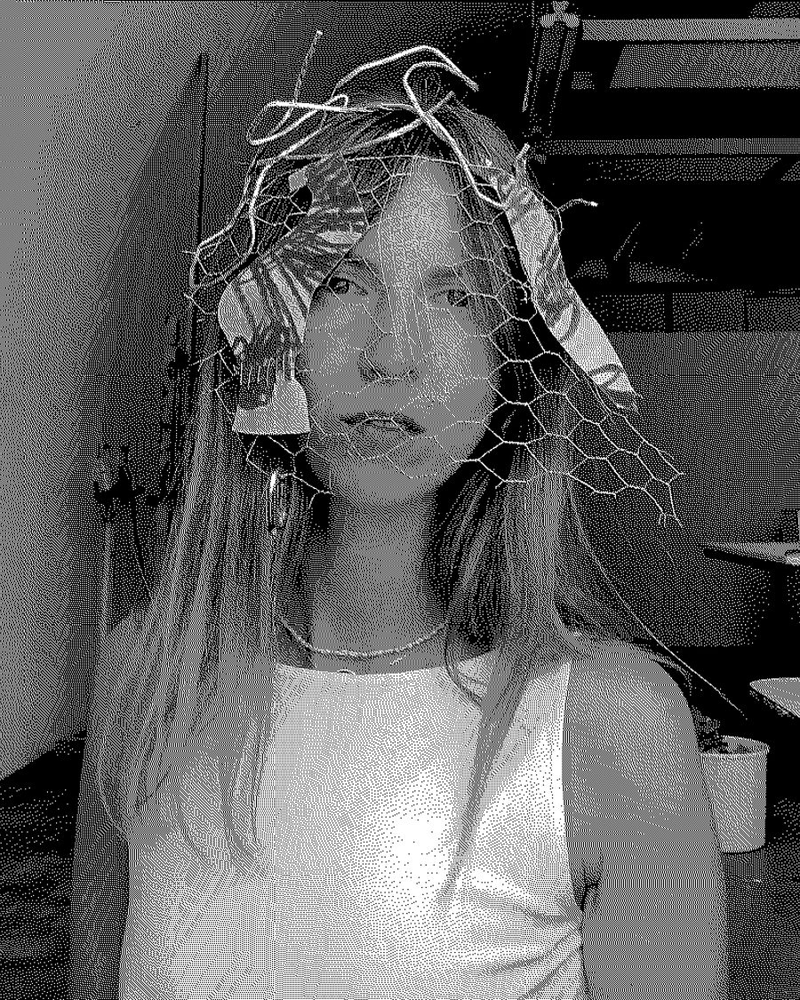

Аліна ХорольськаAlina Khorolska
Київ, УкраїнаKyiv, Ukraine
Мультидисциплінарна художниця з Києва. У своїй практиці поєднує відео, анімацію, колаж і текстиль, досліджуючи взаємозв'язки між людиною, суспільством і природою. Її роботи поєднують ручні техніки та цифрові медіа, створюючи поетичний діалог між матеріальним і віртуальним.
Аліна працює у сфері new media art, інтегруючи технології та motion design у свої мистецькі дослідження й візуальні наративи.
Multidisciplinary artist based in Kyiv. In her practice, she combines video, animation, collage, and textile techniques, exploring the interconnectedness between humans, society, and nature. Her works merge hand-crafted processes with digital media, creating a poetic dialogue between the material and the virtual.
Alina also works within the field of new media art, integrating technology and motion design into her artistic research and visual storytelling.